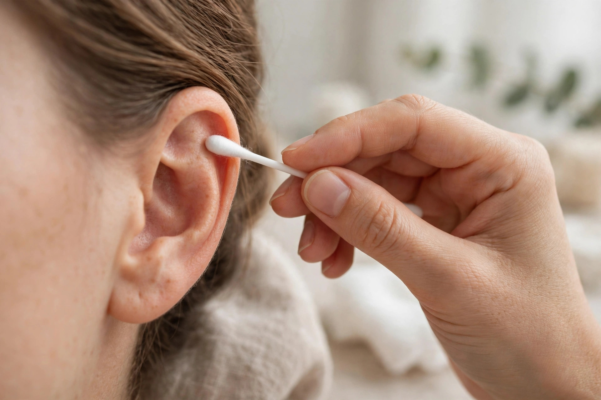

ツボの図と自分の耳を見比べて、「位置がわからない」と手が止まってしまう。耳ツボセルフケアでいちばん多いつまずきです。この記事では、エリアを絞ってから綿棒で押して反応を見る、専門店でも使う探し方の手順を紹介します。

耳ツボの図を見ながら自分の耳を触ると、「図と形が違って、どこが正解かわからない」と感じる方は多いものです。理由は大きく二つあります。一つ目は、耳の形・大きさ・くぼみの深さには個人差が大きく、図はあくまで標準的な耳を描いたものだからです。二つ目は、耳ツボの位置は「点」というより「反応が出る場所」で、骨格の目印だけでは決まらないからです。図で場所のあたりをつけ、最後は自分の耳の反応で確かめる。この二段構えが、探し方の基本になります。
代表的なポイントの「エリア」の目安です。正確な位置は耳の形で変わるため、最後は綿棒の反応で決めてください。
| 神門（しんもん） | 耳の上部のくぼみ（三角窩）のあたり。気持ちを落ち着けたいときなどに選ばれる代表的なポイントです |
|---|---|
| 内分泌（ないぶんぴつ） | 耳の穴の手前にある、くぼみのあたり。体のリズムを整えたいときに選ばれます |
| 眼（がん） | 耳たぶの中央あたり。画面を見る時間が長い方のケアに選ばれます |
| 肩（かた） | 耳の外側のふちに沿った、肩の高さに相当するあたりです |
基本のポイントの全体像は「セルフケアガイド」にまとめています。用意するもの（綿棒・ピンセット・シード）の購入先は「セルフケア用品のご案内」をご覧ください。
代表的なポイント「神門」で、探し方の流れを具体的に見てみましょう。まずエリアは「耳の上部のくぼみ（三角窩）」です。指で耳の上部を触り、くぼんだ場所を確認します。次に、そのくぼみの中を綿棒で数ミリずつずらしながら軽く押していきます。くぼみの底のあたりで、他の場所より「響く」「痛気持ちいい」と感じる点が見つかることが多いはずです。見つかったら、そこが今日の神門の位置です。反対の耳も同じ手順で探すと、左右で感覚の強さが違うことにも気づけます。この「エリア→綿棒→反応」の流れは、他のポイントでも同じです。最初は神門のような分かりやすいポイントで感覚をつかんでください。
反応がはっきりしない日は、無理に決めなくて構いません。体調や時間帯によって反応の出方は変わります。そんな日は、図の目安の位置に貼って様子を見るか、耳全体を手で包んで温める・やさしくマッサージするだけでも十分です。また、自分の耳は鏡越しで見えにくい場所もあるため、後ろ側や下側のポイントは、セルフでは難しいと割り切ることも大切です。難しい場所こそ、お店で位置を確認してもらう価値があります。 また、探す道具を変えてみる方法もあります。綿棒のほかに、耳ツボ用の探し棒（先の丸いスティック）や、自分の爪の先で軽く押す方法でも反応は確かめられます。大切なのは、道具よりも「周りと比べてどうか」を比べることです。一点を強く押すのではなく、面を少しずつずらしながら、感覚の違いを比べるようにしてください。
当店では、耳のポイント座標のデータをもとに、耳の反応を見ながら一つずつ位置を決めて貼ります。「図の見方から知りたい」「自分の耳の位置を一度確認したい」という方は、開業後の来店時にご相談ください（コースは「メニュー・料金」）。また、近日発売予定の教材『耳ツボセルフケア手帖』でも、24のポイントの全体図と拡大図で位置の探し方を詳しく図解する予定です。発売の際は、このブログとLINE公式アカウントでお知らせします。
耳ツボ専門店ミミル 梅田は近日開業予定です。開業のお知らせと予約受付の開始は、LINE公式アカウントでお知らせします。
LINEで友だち追加（開業のお知らせを受け取る）